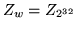
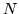
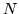
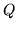
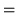
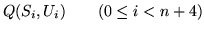
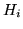

Next: Design of Mercy
Up:
Mercy: a fast large Previous: Mercy design goals
Subsections
Since most of Mercy's operations are based around 32-bit words, we define . Vectors are indexed from zero, so a vector of 128 32-bit numbers will be indexed as . The symbol represents bitwise exclusive OR; where appears in the figures with a square box around it, it represents addition in the ring . Least significant and lowest indexed bytes and words appear leftmost and uppermost in the figures.
Note that some details that would be needed to build a specification of Mercy-based file encryption sufficient for interoperability, such as byte ordering within words, are omitted since they are irrelevant for cryptanalytic purposes.
The  box ( , Figure
1) is a
key-dependent mapping of bytes onto words.  represents multiplicative inverses in with polynomial base
except that
. are key
dependent bijective affine mappings on
box ( , Figure
1) is a
key-dependent mapping of bytes onto words.  represents multiplicative inverses in with polynomial base
except that
. are key
dependent bijective affine mappings on  .
.
(Figure
2) is drawn
from David Wheeler's stream cipher WAKE [21]; it's a simple,
key-dependent mapping on 32-bit words. The most significant
byte of the input word is looked up in the  box, and the output XORred with the other three
bytes shifted up eight bits; the construction of the
box, and the output XORred with the other three
bytes shifted up eight bits; the construction of the  box ensures that this mapping is
bijective.
box ensures that this mapping is
bijective.
The  state machine (Figure 3) maps a four-word initial state and one word input onto a four-word final state and one word output ( ) using taps from a linear feedback shift register and a nonlinear mixing function.
The function (; Figure 4) accepts a
128-bit spice  and a -bit input and generates a
-bit output (
). (usually just
and a -bit input and generates a
-bit output (
). (usually just  ) is the F function for the
Feistel rounds. Here represents
successive 128-bit states of a state machine; are the
successive 32-bit inputs to the state machine, and are the
outputs.
) is the F function for the
Feistel rounds. Here represents
successive 128-bit states of a state machine; are the
successive 32-bit inputs to the state machine, and are the
outputs.
|  | |||
|  | |||
Mercy uses a six round Feistel structure (Figure 5) with partial
pre- and post-whitening; unusually, the final swap is
not omitted. The spice (usually the sector
number) goes through a ``spice scheduling'' procedure,
analogous with key scheduling, through which the ``spice
material'' is generated
based on the input spice, using the  variant of the
variant of the  function; this forms
six 128-bit ``round spices''. Spice scheduling uses a dummy
input to the F function; for this a vector of incrementing
bytes
function; this forms
six 128-bit ``round spices''. Spice scheduling uses a dummy
input to the F function; for this a vector of incrementing
bytes  is used.
is used.  represents the
plaintext, the ciphertext,
and the
whitening values. We describe decryption below; since Mercy is
a straightforward Feistel cipher encryption follows in the
straightforward way.
represents the
plaintext, the ciphertext,
and the
whitening values. We describe decryption below; since Mercy is
a straightforward Feistel cipher encryption follows in the
straightforward way.
|  | |||
|
|
The key is used to seed a CPRNG from which key material is
drawn; [10] is used in the
sample implementation (after discarding 256 bytes of output),
and is convenient since it's small and byte oriented, but any
strong CPRNG will serve. Then the procedure in Figure 6 generates
the substitutions and the 2048-bit
whitening values  .
.
An expected 10.6 random bytes will be drawn for each  . Once have been
determined, a 1k table representing the
. Once have been
determined, a 1k table representing the  box can be generated. During normal use 1536
bytes of key-dependent tables are used.
box can be generated. During normal use 1536
bytes of key-dependent tables are used.


Next: Design of Mercy
Up:
Mercy: a fast large Previous: Mercy design goals